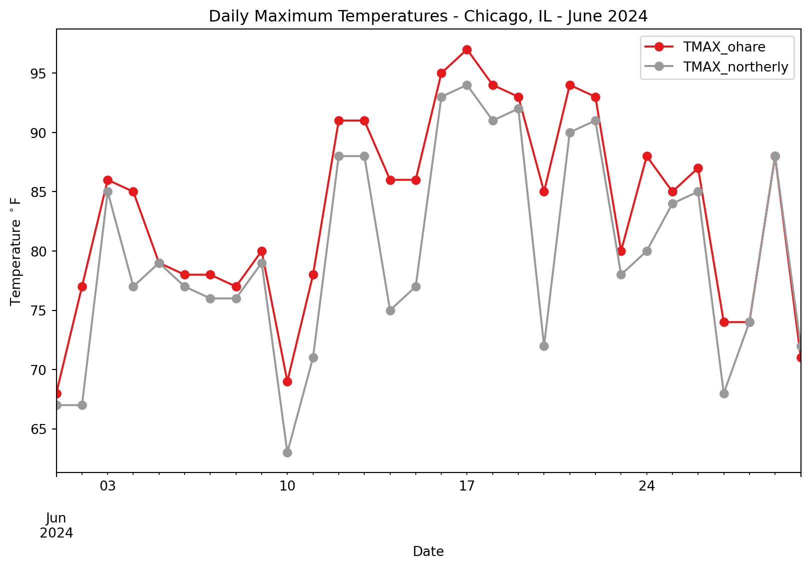
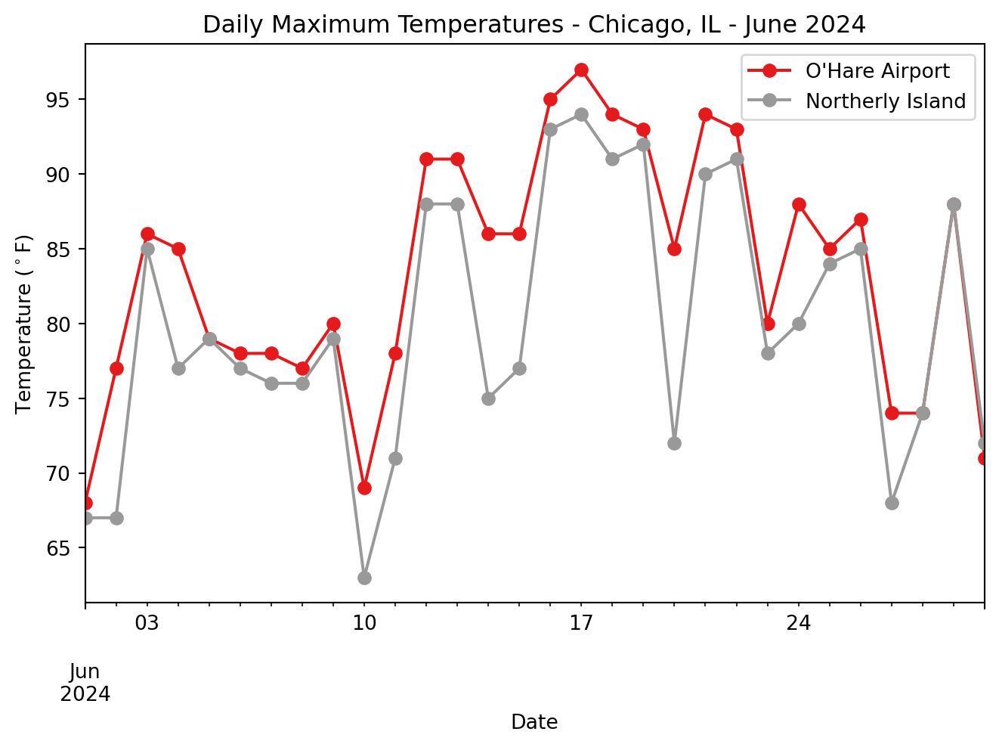

# Use tabular data
import pandas as pd
import matplotlib.pyplot as plt
import numpy as npUrban Heat Wave
A cross-disciplinary, place-based Earth Data Science activity
Learning Goals:
- Access open weather and climate data from NOAA
- Answer a cuturally relevant question using EDS
- Adapt curriculum to different disciplines and cultural contexts
- Analyze temperature data over time
- Parse date information so that it is represented as a datetime type
- Use operators to convert to different units
- Compare temperature in different locations
We’re all feeling the heat!
The summer of 2024 was the hottest yet, (Younger (2024)) and every indication is that the heat is only going to get more intense. Communities need to protect their vulnerable members by adapting to the changing climate with solutions informed by their cultural, geographic, and political context.
In this hands-on Earth Data Science activity, we’ll look at temperature data from two locations in the Chicago area and compare them.
Place-based, culturally-relevant curriculum is essential to engaging diverse groups of students
Because this is a place-based learning exercise, it can be adapted to different cultural contexts. This is a key element we hear about when asking communities how to teach Earth Data Science in a culturally responsive way.

For example, depending on the context you might as students: * What effects has heat had on your community? * What changes have you observed to the climate over your lifetime? Can you talk to an elder and find out what changes they have observed? * How have policies like redlining influenced community vulnerability to heat waves? * Are there traditional building methods or ecological practices in your culture that help to mitigate the effects of heat waves? * What are some short- and long-term strategies for mitigating the effects of heat on your community? If you were implementing mitigation strategies, who would you reach out to first? For example: * Reaching out to vulnerable community members through cultural and religious institutions to provide aid such as transportation to an air conditioned space, ensure water supply, and cool down buildings with strategies like fans and radiation-blocking window films. * Culturally and climatically appropriate changes to the built environment to reduce heat absorption and storage during heat waves. * Culturally and climatically appropriate changes and/or expansion of green space to reduce heat absorption and storage * Cultural events to help your community adapt
Making cultural connections is important for achieving learning goals and engaging diverse groups of students.
Meet your classroom learning goals with Earth Data Science
We have also developed this activity so that it can be adapted to many different academic disciplines, and we encourage you to do so in your classes! For example:
| Discipline | Learning Goals |
|---|---|
| Physics | Heat transfer concepts that cause the Urban Heat Island effect such as albedo, thermal mass, and latent heat |
| Biology | Biological concepts that cause the Urban Heat Island effect such as transpiration, photosynthesis, and homeostasis |
| Statistics | Probability distributions for average and extreme temperatures, stationarity, and hypothesis testing to determine differences among sites |
| Calculus | Processes governing heat transfer |
Case Study: Chicago summer 2024 heat wave

According to the Illinois state climatology office, daily average temperatures between June 13 and June 25 were 5 to 15 degrees above normal in Chicago and statewide. Overnight temperatures in Chicago were forecast to stay into the 70’s with record breaking temperatures being attributed to climate change.


If you teach in or near Chicago, your students probably have some feelings about how hot it was! The Chicago area is known for its at times extreme weather, but cities get hit particularly hard by heat waves due to the urban heat island effect. This article from WGN explains what this means for cities like Chicago.
Heat kills
Climate change is intensifying summer heat in Chicago, particularly in heat island areas, which disproportionately affects marginalized communities. These neighborhoods, often with less green space and more heat-trapping infrastructure, face higher temperatures and greater health risks (Chicago Tribune). Chicago O’Hare International Airport is a known heat island often reporting temperatures 5-10 degrees warmer than surrounding communities (NBC Chicago).
Is it cooler by the lake?
Many Chicagoans know that one of the best ways to beat the heat is to head to the lake. In this we’ll try to answer whether it’s really cooler by the Lake, and what Chicago could do to cool down the rest of the City.
![WGN Temperature Forecast – it’s cooler by the lake!]https://wgntv.com/wp-content/uploads/sites/5/2023/04/NLanimation10and11.gif)
We will select two climate stations located within the greater Chicago area: O’Hare International Airport (Station ID: USW00094846), and Northerly Island (Station ID: USC00111550) to explore trends in maximum daily temperatures.


Get started with open, reproducible science in the cloud
We will be using Python and GitHub codespaces, two popular open-source data science tools, to do the coding for this workshop, along with GitHub classroom to distribute the activity. You will not need to download or install anything on your computer - everything we’ll do can be done in the cloud! You and your students will need a free GitHub account in order to accept the assignment from GitHub classroom and complete the activity.
Tip
For those interested, we have created a working Python environment that we host on Docker Hub. Feel free to share this with your students or research group.
We’re excited to get started doing some EDS with you!
STEP 1: Import libraries
Python packages let you use code written by experts around the world
Because Python is open source, lots of different people and organizations can contribute (including you!). Many contributions are in the form of packages which do not come with a standard Python download.
Read More: Packages need to be installed and imported.
Learn more about using Python packages. How do you find and use packages? What is the difference between installing and importing packages? When do you need to do each one? This article on Python packages will walk you through the basics.
In the cell below, someone was trying to import the pandas package, which helps us to work with tabular data such as comma-separated value or csv files.
Try It: Import a package
- Correct the typo below to properly import the pandas package under its alias pd.
- Run the cell to import pandas
STEP 2: Download Data
Global Historical Climatology Network
One way scientists know that the climate is changing is by looking at records from temperature sensors around the globe. Some of these sensors have been recording data for over a century! For this activity, we’ll get daily maximum temperature measurements from the Global Historical Climate Network daily, an openly available and extensively validated global network of temperature sensors.

The GHCNd data are available through by the National Oceanic and Atmospheric Administration’s (NOAA) National Centers for Environmental Information (NCEI) Climate Data Online search tool. We can get also get these data using code by contacting NCEI’s API.
What’s an API?
An API, or Application Programming Interface, is how computers talk to each other.
Read More
Read more about NCEI’s API and the Climate Data Online database.
For this activity we have created URLs that contacts the NCEI API for two climate stations in the greater Chicago area. We will walk through each line of the url to explain what it is doing.
O’Hare International Airport
Chicago O’Hare International Airport (ORD) is one of the busiest airports in the world, serving as a major hub for both domestic and international flights. Located about 14 miles northwest of downtown Chicago, it offers flights to more than 200 destinations and handles over 83 million passengers annually. It is home to Chicago’s official meteorological station. It creates an urban heat island due to the amount of concrete and asphalt needed to support the infrastructure.
Station ID: USW00094846
# Create an API call for the O'Hare climate station
ohare_url = (
'https://www.ncei.noaa.gov/access/services/data/v1?'
'dataset=daily-summaries'
'&dataTypes=TMAX'
'&stations=USW00094846'
'&startDate=2024-06-01'
'&endDate=2024-06-30'
'&units=standard')
# Path to local data file (Codespaces only)
ohare_path = 'ohare-temps.csv'
ohare_url'https://www.ncei.noaa.gov/access/services/data/v1?dataset=daily-summaries&dataTypes=TMAX&stations=USW00094846&startDate=2024-06-01&endDate=2024-06-30&units=standard'# Open data using pandas
ohare_df = pd.read_csv(
ohare_url,
# Comment above and uncomment below if NCEI isn't working
# ohare_path,
parse_dates=True,
index_col='DATE',
na_values=['NaN'])
# Check data
ohare_df| STATION | TMAX | |
|---|---|---|
| DATE | ||
| 2024-06-01 | USW00094846 | 68 |
| 2024-06-02 | USW00094846 | 77 |
| 2024-06-03 | USW00094846 | 86 |
| 2024-06-04 | USW00094846 | 85 |
| 2024-06-05 | USW00094846 | 79 |
| 2024-06-06 | USW00094846 | 78 |
| 2024-06-07 | USW00094846 | 78 |
| 2024-06-08 | USW00094846 | 77 |
| 2024-06-09 | USW00094846 | 80 |
| 2024-06-10 | USW00094846 | 69 |
| 2024-06-11 | USW00094846 | 78 |
| 2024-06-12 | USW00094846 | 91 |
| 2024-06-13 | USW00094846 | 91 |
| 2024-06-14 | USW00094846 | 86 |
| 2024-06-15 | USW00094846 | 86 |
| 2024-06-16 | USW00094846 | 95 |
| 2024-06-17 | USW00094846 | 97 |
| 2024-06-18 | USW00094846 | 94 |
| 2024-06-19 | USW00094846 | 93 |
| 2024-06-20 | USW00094846 | 85 |
| 2024-06-21 | USW00094846 | 94 |
| 2024-06-22 | USW00094846 | 93 |
| 2024-06-23 | USW00094846 | 80 |
| 2024-06-24 | USW00094846 | 88 |
| 2024-06-25 | USW00094846 | 85 |
| 2024-06-26 | USW00094846 | 87 |
| 2024-06-27 | USW00094846 | 74 |
| 2024-06-28 | USW00094846 | 74 |
| 2024-06-29 | USW00094846 | 88 |
| 2024-06-30 | USW00094846 | 71 |
# Plot the data using pandas
ohare_df.TMAX.plot()Northerly Island
Northerly Island is a 91-acre man-made peninsula located along the Lake Michigan shoreline in Chicago. Originally part of Daniel Burnham’s 1909 Plan of Chicago, it was transformed into a nature-focused park featuring walking trails, natural habitats, and scenic lakefront views. The site also hosts the Huntington Bank Pavilion, a popular outdoor concert venue.
Station ID: USC00111550
# Create an API call for the Northerly climate station
northerly_url = ('https://www.ncei.noaa.gov/access/services/data/v1?'
'dataset=daily-summaries'
'&dataTypes=TMAX'
'&stations=USC00111550'
'&startDate=2024-06-01'
'&endDate=2024-06-30'
'&units=standard')
# Path to local data file (Codespaces only)
northerly_path = 'northerly-temps.csv'
northerly_url'https://www.ncei.noaa.gov/access/services/data/v1?dataset=daily-summaries&dataTypes=TMAX&stations=USC00111550&startDate=2024-06-01&endDate=2024-06-30&units=standard'# Open data
northerly_df = pd.read_csv(
northerly_url,
# Comment above and uncomment below in the event that NCEI isn't working
# northerly_path,
parse_dates=True,
index_col='DATE',
na_values=['NaN'])
# Check data
northerly_df| STATION | TMAX | |
|---|---|---|
| DATE | ||
| 2024-06-01 | USC00111550 | 67 |
| 2024-06-02 | USC00111550 | 67 |
| 2024-06-03 | USC00111550 | 85 |
| 2024-06-04 | USC00111550 | 77 |
| 2024-06-05 | USC00111550 | 79 |
| 2024-06-06 | USC00111550 | 77 |
| 2024-06-07 | USC00111550 | 76 |
| 2024-06-08 | USC00111550 | 76 |
| 2024-06-09 | USC00111550 | 79 |
| 2024-06-10 | USC00111550 | 63 |
| 2024-06-11 | USC00111550 | 71 |
| 2024-06-12 | USC00111550 | 88 |
| 2024-06-13 | USC00111550 | 88 |
| 2024-06-14 | USC00111550 | 75 |
| 2024-06-15 | USC00111550 | 77 |
| 2024-06-16 | USC00111550 | 93 |
| 2024-06-17 | USC00111550 | 94 |
| 2024-06-18 | USC00111550 | 91 |
| 2024-06-19 | USC00111550 | 92 |
| 2024-06-20 | USC00111550 | 72 |
| 2024-06-21 | USC00111550 | 90 |
| 2024-06-22 | USC00111550 | 91 |
| 2024-06-23 | USC00111550 | 78 |
| 2024-06-24 | USC00111550 | 80 |
| 2024-06-25 | USC00111550 | 84 |
| 2024-06-26 | USC00111550 | 85 |
| 2024-06-27 | USC00111550 | 68 |
| 2024-06-28 | USC00111550 | 74 |
| 2024-06-29 | USC00111550 | 88 |
| 2024-06-30 | USC00111550 | 72 |
northerly_df.TMAX.plot()STEP 3: Wrangle Data
Select only the columns you want
ohare_tmax_df = ohare_df[['TMAX']]
ohare_tmax_df| TMAX | |
|---|---|
| DATE | |
| 2024-06-01 | 68 |
| 2024-06-02 | 77 |
| 2024-06-03 | 86 |
| 2024-06-04 | 85 |
| 2024-06-05 | 79 |
| 2024-06-06 | 78 |
| 2024-06-07 | 78 |
| 2024-06-08 | 77 |
| 2024-06-09 | 80 |
| 2024-06-10 | 69 |
| 2024-06-11 | 78 |
| 2024-06-12 | 91 |
| 2024-06-13 | 91 |
| 2024-06-14 | 86 |
| 2024-06-15 | 86 |
| 2024-06-16 | 95 |
| 2024-06-17 | 97 |
| 2024-06-18 | 94 |
| 2024-06-19 | 93 |
| 2024-06-20 | 85 |
| 2024-06-21 | 94 |
| 2024-06-22 | 93 |
| 2024-06-23 | 80 |
| 2024-06-24 | 88 |
| 2024-06-25 | 85 |
| 2024-06-26 | 87 |
| 2024-06-27 | 74 |
| 2024-06-28 | 74 |
| 2024-06-29 | 88 |
| 2024-06-30 | 71 |
northerly_tmax_df = northerly_df[['TMAX']]
northerly_tmax_df| TMAX | |
|---|---|
| DATE | |
| 2024-06-01 | 67 |
| 2024-06-02 | 67 |
| 2024-06-03 | 85 |
| 2024-06-04 | 77 |
| 2024-06-05 | 79 |
| 2024-06-06 | 77 |
| 2024-06-07 | 76 |
| 2024-06-08 | 76 |
| 2024-06-09 | 79 |
| 2024-06-10 | 63 |
| 2024-06-11 | 71 |
| 2024-06-12 | 88 |
| 2024-06-13 | 88 |
| 2024-06-14 | 75 |
| 2024-06-15 | 77 |
| 2024-06-16 | 93 |
| 2024-06-17 | 94 |
| 2024-06-18 | 91 |
| 2024-06-19 | 92 |
| 2024-06-20 | 72 |
| 2024-06-21 | 90 |
| 2024-06-22 | 91 |
| 2024-06-23 | 78 |
| 2024-06-24 | 80 |
| 2024-06-25 | 84 |
| 2024-06-26 | 85 |
| 2024-06-27 | 68 |
| 2024-06-28 | 74 |
| 2024-06-29 | 88 |
| 2024-06-30 | 72 |
Join data
# Concatenate the data
tmax_df = (
ohare_tmax_df
.join(
northerly_tmax_df,
lsuffix='_ohare',
rsuffix='_northerly')
)
tmax_df| TMAX_ohare | TMAX_northerly | |
|---|---|---|
| DATE | ||
| 2024-06-01 | 68 | 67 |
| 2024-06-02 | 77 | 67 |
| 2024-06-03 | 86 | 85 |
| 2024-06-04 | 85 | 77 |
| 2024-06-05 | 79 | 79 |
| 2024-06-06 | 78 | 77 |
| 2024-06-07 | 78 | 76 |
| 2024-06-08 | 77 | 76 |
| 2024-06-09 | 80 | 79 |
| 2024-06-10 | 69 | 63 |
| 2024-06-11 | 78 | 71 |
| 2024-06-12 | 91 | 88 |
| 2024-06-13 | 91 | 88 |
| 2024-06-14 | 86 | 75 |
| 2024-06-15 | 86 | 77 |
| 2024-06-16 | 95 | 93 |
| 2024-06-17 | 97 | 94 |
| 2024-06-18 | 94 | 91 |
| 2024-06-19 | 93 | 92 |
| 2024-06-20 | 85 | 72 |
| 2024-06-21 | 94 | 90 |
| 2024-06-22 | 93 | 91 |
| 2024-06-23 | 80 | 78 |
| 2024-06-24 | 88 | 80 |
| 2024-06-25 | 85 | 84 |
| 2024-06-26 | 87 | 85 |
| 2024-06-27 | 74 | 68 |
| 2024-06-28 | 74 | 74 |
| 2024-06-29 | 88 | 88 |
| 2024-06-30 | 71 | 72 |
STEP 4: Plot
Rename columns
# Rename the columns
tmax_df.rename(mapper={
"O'Hare International Airport": 'TMAX_ohare',
'Northerly Island': 'TMAX_northerly'})
tmax_df| TMAX_ohare | TMAX_northerly | |
|---|---|---|
| DATE | ||
| 2024-06-01 | 68 | 67 |
| 2024-06-02 | 77 | 67 |
| 2024-06-03 | 86 | 85 |
| 2024-06-04 | 85 | 77 |
| 2024-06-05 | 79 | 79 |
| 2024-06-06 | 78 | 77 |
| 2024-06-07 | 78 | 76 |
| 2024-06-08 | 77 | 76 |
| 2024-06-09 | 80 | 79 |
| 2024-06-10 | 69 | 63 |
| 2024-06-11 | 78 | 71 |
| 2024-06-12 | 91 | 88 |
| 2024-06-13 | 91 | 88 |
| 2024-06-14 | 86 | 75 |
| 2024-06-15 | 86 | 77 |
| 2024-06-16 | 95 | 93 |
| 2024-06-17 | 97 | 94 |
| 2024-06-18 | 94 | 91 |
| 2024-06-19 | 93 | 92 |
| 2024-06-20 | 85 | 72 |
| 2024-06-21 | 94 | 90 |
| 2024-06-22 | 93 | 91 |
| 2024-06-23 | 80 | 78 |
| 2024-06-24 | 88 | 80 |
| 2024-06-25 | 85 | 84 |
| 2024-06-26 | 87 | 85 |
| 2024-06-27 | 74 | 68 |
| 2024-06-28 | 74 | 74 |
| 2024-06-29 | 88 | 88 |
| 2024-06-30 | 71 | 72 |
tmax_df.plot(
figsize=(10, 6),
marker='o', linestyle='-',
xlabel='Date', ylabel='Temperature $^\circ$F',
title='Daily Maximum Temperatures - Chicago, IL - June 2024',
colormap='Set1'
)
Conversation Starter: What do you notice about the data?
Take a few minutes to discuss the patterns and trends you see in the data with your neighbors.
STEP 5: Analysis
Is it really cooler by the Lake?
We might be able to make some claims based on the plot above but is there more we can say about the differences in temperature between O’Hare and Northerly Island last June? What other kinds of test might we be able to do on this data to help tell this story in more detail?
Statistical test text and code goes here…
OPTIONAL BONUS activities (if you have time)
- Use ChatGPT to make a different kind of plot
- Compare two different climate stations
- Add a line that represents the average temperature
# From ChatGPT - Can we make a similar plot using bars instead of points/lines?
# Sample data (replace with your actual DataFrame)
# tmax_df should be your DataFrame with 'TMAX_ohare' and 'TMAX_northerly' columns and a DateTime index
# Define the width of the bars
bar_width = 0.4
# Create a numpy array for the indices (x-axis positions)
x = np.arange(len(tmax_df.index))
# Create a figure
plt.figure(figsize=(10, 6))
# Plot O'Hare data as bars
plt.bar(x - bar_width / 2, tmax_df['TMAX_ohare'], width=bar_width, label="O'Hare International Airport", color='red')
# Plot Northerly Island data as bars
plt.bar(x + bar_width / 2, tmax_df['TMAX_northerly'], width=bar_width, label="Northerly Island", color='blue')
# Add title and labels
plt.title('Daily Maximum Temperatures - June 2024')
plt.xlabel('Date')
plt.ylabel('Temperature (°F)')
# Set x-axis ticks to the index (date) and rotate for better readability
plt.xticks(x, tmax_df.index.strftime('%Y-%m-%d'), rotation=45)
# Add grid
plt.grid(True)
# Add legend
plt.legend()
# Adjust layout to prevent clipping
plt.tight_layout()
# Show plot
plt.show()
References
Younger, Sally. 2024. “NASA Finds Summer 2024 Hottest to Date.” https://www.nasa.gov/earth/nasa-finds-summer-2024-hottest-to-date/.